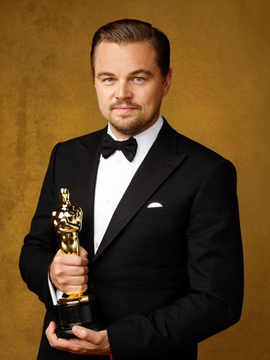

A Tribute to Talent: Memorable Industry Milestones
The Academy of Motion Picture Arts and Sciences (AMPAS) was founded in 1927,
with the first Academy Awards ceremony held in 1929
at the Hollywood Roosevelt Hotel in Los Angeles.
Robert Downey
The Iron Man won an Academy Award
for Best Visual Effects at the 81st Academy Awards in 2009.
Emma Stone
Her first Oscar for 2016 musical "La La Land."
In the Frankenstein-inspired "Poor Things," Stone played Bella Baxter.

Leonardo DiCaprio
Won the Golden Globe Award and Academy Award for Best Actor
for his portrayal of Hugh Glass in the 2015 film The Revenant.
Indian Oscar Winners
Video Gallery